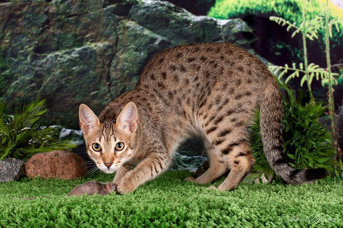
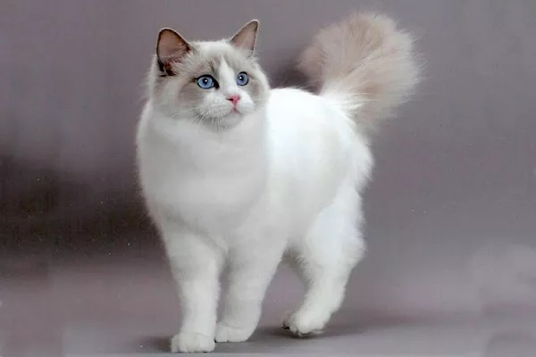
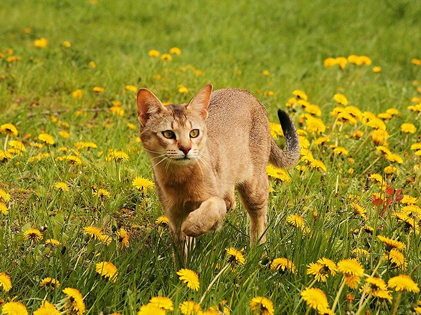
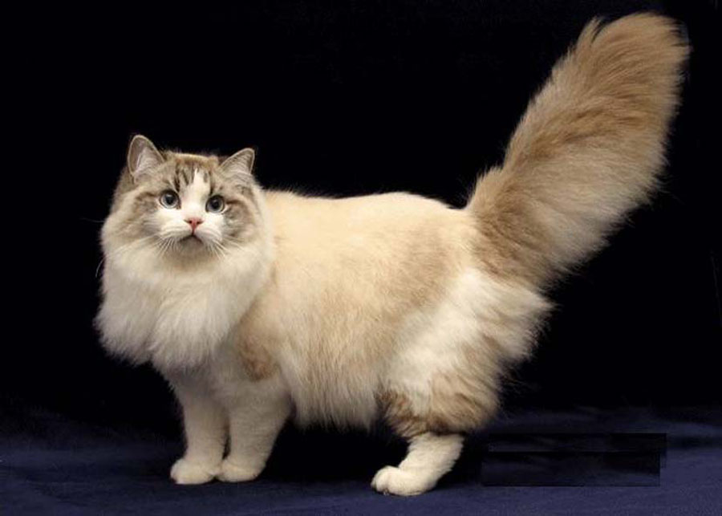

Мейн-кун

Мейн-кун — однозначно одна из самых крупных пород кошки в мире, если не самая крупная. Это пушистый гигант, который к тому же отличается весьма миролюбивым нравом.
- Рост в холке: 25-41 см.
- Вес: 3,6-5,4 кг. для кошки, 5,9-8,2 кг. для кота
Интересные факты:
- Лапы мейн-кунов очень подвижны
- У мейн-кунов самые длинные хвосты
- Мейн-куны обожают воду
Саванна
Саванна – гибрид дикого африканского сервала и домашней кошки сиамо-ориентальной группы и одна из самых больших кошек в мире. У кошек этой породы живой ум, высокая активность и развитый охотничий инстинкт.
- Рост в холке: до 50 см.
- Вес: 3,6-5,4 кг. для кошки, 5,9-8,2 кг. для кота
Интересные факты:
- Окрас такой кошки называется “табби” и характерен пятнами разных оттенков
- Имеет феноменальную прыгучесть
- Могут издовать порой пугающие звуки похожие на шипение змеи
Рэгдолл
Рэгдолл – одна из крупнейших домашних кошек, третья после саванны и мейн-куна. Самцы значительно превосходят самочек по длине и весу. Если котов можно назвать массивными, то кошек – стройными и изящными.
- Рост в холке: 30-42 см.
- Вес: кошки 4-6 кг., коты 6-9 кг.
Интересные факты:
- Не переносят одиночество
- Приветливые и тихие котята
- Эта порода кошек медленно растет
Чаузи(Хауси)
Чаузи(Хауси) – гибрид дикого камышового кота и абиссинской кошки. Кошки этой породы унаследовали от дикого предка внешность, а от домашнего — ласковый нрав.
- Рост в холке: до 40 см.
- Вес: 10-15 кг.
Интересные факты:
- Кошки чаузи относятся к редкой породе
- Очень энергичные, постоянно находятся в движении
- Обладают добрым нравом
Рагамаффин
Рагамаффин — метис рэгдолла и беспородных кошек, то есть, это фактически рэгдолл, но с большим «ассортиментом» расцветок.
- Рост в холке: 28-33 см.
- Вес: кошки 5-7,5 кг., коты 5-10 кг.
Интересные факты:
- Спокойные и ласковые кошки
- Они предпочитаются тихую, спокойную среду
- Их можно научить приносить игрушки по команде